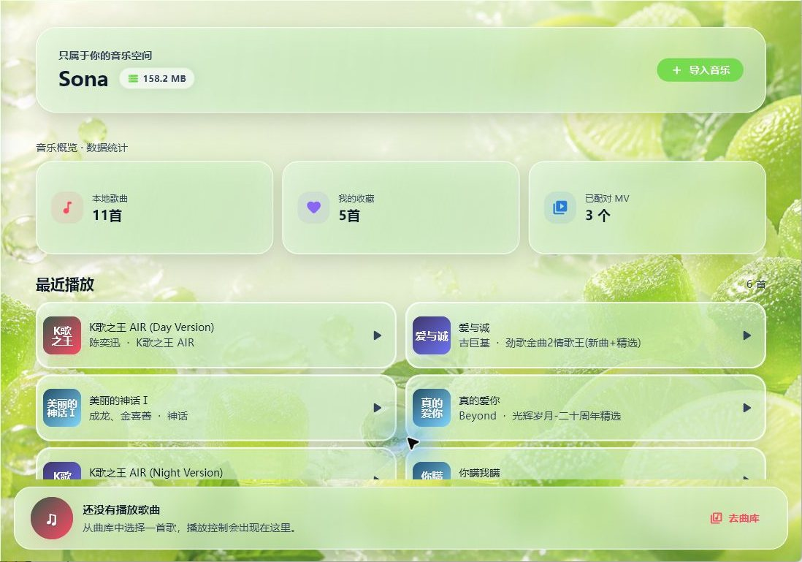
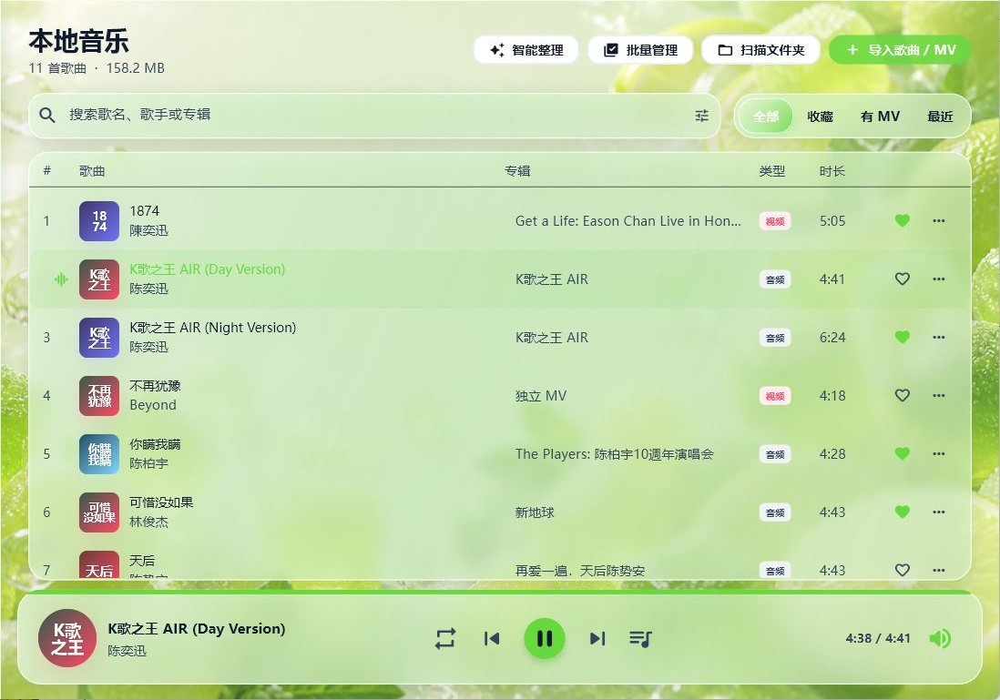
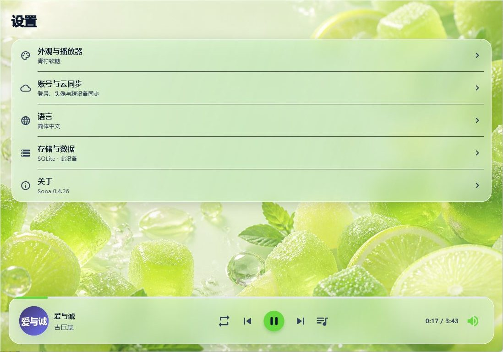

个性化主题
不止换颜色，换一种听歌氛围
液态毛玻璃、黑胶唱片、主题色联动与壁纸专属特效共同构成一套完整皮肤。选中态、文字对比度和控制器都会随主题自动适配。
为什么是 Sona
Sona 从一开始就围绕本地文件设计：先让播放可靠，再把云同步当作增强，而不是依赖。曲库保存在本机 SQLite 数据库里，扫描、收藏、歌单和播放记录离线时都照常工作。
试着关掉网络看看。
核心亮点
从导入一首歌，到连续播放、整理、识别、收藏，再到 MV 与完整播放页，每一步都像一个完整的产品，而不是一堆功能拼在一起。
液态毛玻璃、黑胶唱片、主题色联动与壁纸专属特效共同构成一套完整皮肤。选中态、文字对比度和控制器都会随主题自动适配。
曲库、队列、歌单、收藏与记录都不依赖网络。云端不可用时会明确提示，但不会拖垮本地体验。
自动识别媒体类型、关联唱片与 MV，队列切歌时播放界面同步更新。
结合媒体标签、文件名清理、MusicBrainz，以及可选的 Chromaprint / AcoustID 声纹回退，校准歌曲、歌手和专辑信息。
同一首歌在不同入口保持一致的播放、右键与队列逻辑。
真实界面
以下画面直接截自 Windows 版本。青柠软糖只是其中一种主题，应用内还可以切换多套壁纸、色彩与特效。



沉浸式黑胶播放页，唱片与液态玻璃控件随主题变化。
技术路径
Flutter 构建双端体验，SQLite 保存本地资料，SHA-256 去重，并对网络请求、云端读取与连续切歌做了防抖、取消和失败回退。
07_chen yi xun - K歌之王air(day ver)[320kbps].mp3
隐私与边界
音乐文件与核心资料都保存在你的设备上。
只有你主动识别时，才会请求公开的音乐资料服务。
0.5.0 可以导出和恢复完整的 Sona 曲库，以及由应用管理的资源。
开始使用
Sona 0.5.0 公开预览版。无需订阅，下载即用。
更喜欢便携版？ 下载 Windows x64 便携版 ZIP ↗
官方版本从 0.4.51 起使用永久 Android 签名，0.5.0 APK 可以直接覆盖安装 0.4.51。如果装过 0.4.50 开发签名版或其他签名的版本，请先导出完整备份并保留媒体文件，卸载一次后再安装 0.5.0。卸载会清除 Sona 的私有数据库、设置和自动快照，但不会删除共享目录里的媒体文件。
Windows 安装包目前没有 Authenticode 签名，SmartScreen 可能提示“未知发布者”。请只从本页面或 GitHub Release 下载。